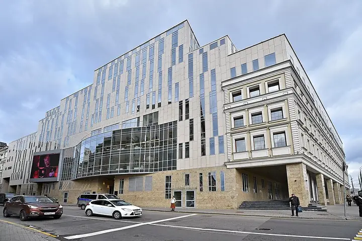

Фото: mos.ru, CC BY 4.0 · Wikimedia Commons
Ресторан при театре · ЦАО
Артист
Ресторан при «Табакерке» от Folio Group — удобно до и после спектакля.
- ₽₽ · 1 500–3 000 ₽ на человека
- в 1 плане
Позвать сюда: АртистОткрыть в каталоге: АртистМаршрут до места: Артист
Адрес и детали
- Адрес
- ул. Чаплыгина, 1А, стр. 1
Открыть на Яндекс Картах (в новой вкладке) - Метро
- м. Сретенский бульвар
- Округ
- Центр (ЦАО)
- Цена
- 1 500–3 000 ₽ на человека
- Проверено
- работает — проверили в октябре 2026
Планы с этим местом 1
- Театр Табакова · Театр · м. Чистые пруды
- 1 минута пешкомАртист · Ресторан при театре
Спектакль в театре Табакова и ресторан «Артист» прямо при театре.
Открыть план: «Табакерка» и ужинПозвать сюда: «Табакерка» и ужин
Фото: mos.ru, CC BY 4.0 · Wikimedia Commons

Похожие рядом
Что ещё рядом

Как позвать
- Выбери план, место или событие — в карточке адрес, цены и маршрут в Яндекс Картах.
- Нажми «Позвать сюда» — соберётся приглашение-игра для свидания или голосование для компании.
- Отправь ссылку в любой мессенджер: тебе ответят, а компания отметит, куда и когда может. Бесплатно и без регистрации.